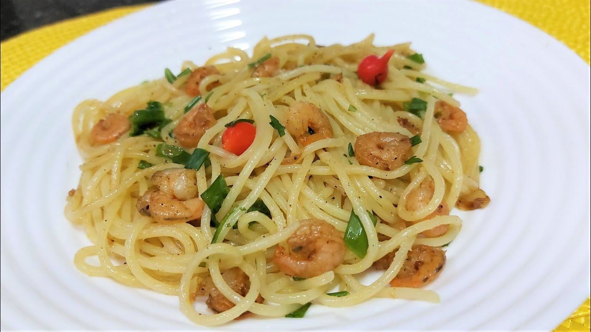

Espaguete ao Alho e Óleo com Camarão

⏱️ 30 min
👨👩👧👦 Serve 4 porções
Ingredientes
- 400g de espaguete
- 300g de camarão limpo
- 4 dentes de alho fatiados
- 4 colheres (sopa) de azeite
- Sal, pimenta e cheiro-verde a gosto
- Suco de ½ limão (opcional)
Modo de preparo
- Cozinhe o espaguete em água salgada até ficar al dente.
- Em uma frigideira, aqueça o azeite e doure levemente o alho.
- Adicione o camarão, tempere com sal, pimenta e, se quiser, um pouco de limão.
- Refogue rapidamente até o camarão mudar de cor.
- Misture o espaguete escorrido ao refogado e finalize com cheiro-verde.
 Papo de Panela
Papo de Panela